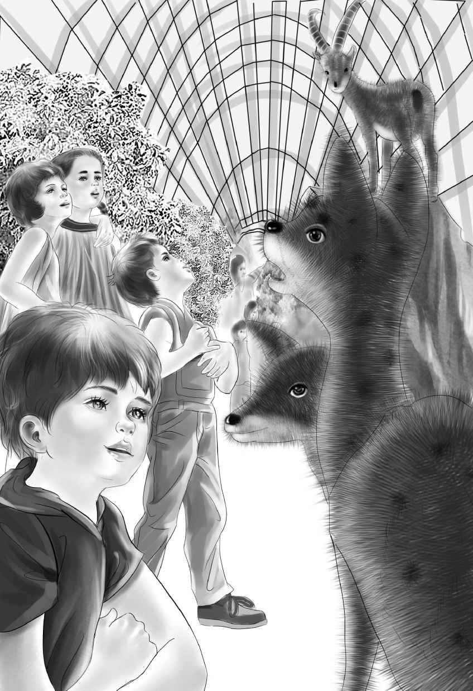

The day came when Benny changed the name of the houseboat to The Watch Alden. The family spent the morning cleaning up the boat and doing the laundry. After lunch， the four young Aldens were sitting on the front deck. Suddenly they saw a large sign on the riverbank. Benny read it aloud，
April Center.
“What does that mean？” he asked. “There’s a dock and everything.”
Mr. Alden， who was sitting in the cabin， heard Benny. He came out at once and looked at the sign.
“It can’t be！It simply can’t be！” he said.
“What can’t be？” asked Henry and Benny.
“Well， April Center，” answered Mr. Alden， still staring at the sign. “That belongs to my old friend， George April.”
“That’s a funny name，” said Benny. “Mr. April.”
“I suppose so，” said Grandfather. “I have known George April for years and years. He lives in London now.”
“What is this April Center？” asked Henry.
Grandfather seemed to wake out of a daze. “Oh， yes， Henry！It’s Mr. April’s idea. He is interested in old things and new things—he especially likes children.”
“We’re not children，” said Benny.
“Well， no，” agreed Grandfather. “But George April would think you were. Wait until you see the things he has in April Center.”
“What things？” asked Benny.
“Now don’t rush me，” said Mr. Alden. “A few years ago， George April bought some land and built April Center. It is a small place in the country， but very famous. I had no idea it was so near. People come here from all over the United States. No cars are allowed. You have to leave your car at the gate. After you pay to enter， you can walk around April Center. Or you can hire a horse and driver by the hour. The drivers wait at the gate.”
Benny opened his mouth to speak and then shut it again. Grandfather noticed.
“Good， Ben，” he said. “You know I am telling this as fast as I can. There is a village green in the middle of April Center—a park with green grass and trees. George sent me a picture postcard of the place once. A road goes right around the edge of the green. There are a lot of buildings all along the street—all different. I remember there’s an old country store. There’s also a doll museum and an animal museum. In the animal museum you can see mounted wild animals and even stones with dinosaur tracks.”
“I’d love to see the dolls，” said Violet. “They must be interesting.”
“I’m sure they are，” said Mr. Alden. “I’ve never seen the place myself. But I’d like to.”
“So would I，” said Henry. “I’ll pole the boat up to the dock.”
The Aldens soon stepped ashore， and Henry dropped the anchor. Both doors of the houseboat were locked and the windows shut.Benny tied the rope. He said， “We will never forget to lock this houseboat. We don’t want to come back again and find that a stranger has been here.”
They started down the path， but they did not walk far before they saw the gate.
Many people were visiting April Center that day. As the Aldens paid for their tickets， they saw parents walking along with their children. On the other side of the gate they could see the village green.
Inside the gate， a horse hitched to a strange-looking wagon was standing under a tree. A small， thin man in a red coat was the driver. The Aldens looked once at the man， but they looked twice at the horse.
“What a thin horse！” said Benny. “I can see his ribs.”
Mr. Alden said， “I don’t understand this. That horse isn’t well fed. George wouldn’t have such a thin horse on his place. I’m sure he doesn’t know about this.”
The driver saw the Aldens. He climbed down from his old wagon. He took off his cap. “See the Center， sir？” he asked Mr. Alden with a bow. “My name’s Sam. Dolly and I go right around the Center. We’ll wait at every building as long as you want.”
Benny looked at Sam and said， “You can’t take five of us. We’re too heavy. That horse can’t pull us all.”
“Oh， yes she can，” said Sam. “Dolly， you’re used to it， aren’t you， girl？” Sam patted Dolly gently. “See， she doesn’t mind at all. This carriage holds six.”
Indeed， there were three seats， and each seat had room for two persons. Without another word， Benny climbed into the front seat beside the driver. Grandfather and Violet sat behind them， and Jessie and Henry took the back seat. Dolly started down the street.
“Go along， pet，” said Sam. “Go along， old girl. You like hot weather. You know you do.”
Benny looked up at Sam. “You don’t come from around here， do you？” he asked.
“No. I’m an old jockey. I’m so small I used to be a jockey in the Blue Grass Country. But I’ve been up here for five years. Now， ladies，” said Sam， looking over his shoulder， “over there is the country store. Then come some old-fashioned houses. And next is the doll museum.”
“Let’s go to the doll museum first，” said Jessie. “We can’t see every building in one day.”
“No，” said Sam. “It takes two days. Some people stay a week.”
Benny said suddenly， “Tell me， Sam， why is Dolly so thin？”
Sam shook his gray head. “I know she’s too thin. It makes me feel poorly. Maybe Dolly’s just a thin horse. I feed her as well as I can.”
Mr. Alden said， “Sam， doesn’t Mr. April pay you well？He’s a good friend of mine.”
Sam sat up very straight. “Oh， yes， sir！Mr. April pays me fine. He’s a good man. Don’t ever say anything bad about Mr. April！He can’t come here very often. He lives in London.”
“Yes， he does，” said Grandfather. “But he wouldn’t like to see such a thin horse on his place.”
But Sam only said， “Giddap， old girl. Stop at the doll museum.”
Dolly began to trot. She stopped in front of the museum.
“We’ll wait right here，” said Sam. “Take your time. Stay as long as you like.”
The Aldens went up the front walk. Mr. Alden said， “Something is wrong here. I’d like to know what it is.”
Violet said， “Sam loves his horse. You can see that. Did you notice that Dolly was brushed till she shone like silk？”
“Yes，” said Mr. Alden. “That’s why it’s so strange. Sam takes good care of Dolly， but neither one gets enough to eat.”
Henry laughed just a little. He said， “Grandfather， you know most people wouldn’t even notice a thin horse. And they wouldn’t care if they did.”
“Yes， Henry， I know. But this family loves animals， and we can’t help noticing them.”
The Aldens had reached the door. “Well， here are the dolls，” Grandfather said.
“What a wonderful place！” said Violet when they walked inside. Even Henry and Benny were fascinated. A young girl in an old-fashioned costume came to meet them.
“Let me show you this dollhouse，” she said. “Notice the man doll sitting in that easy chair？He is six inches tall. He is reading a newspaper that is just the size of a postage stamp. You can see it is printed exactly like a big one. Now let me show you his set of checkers.”
The girl picked up a tiny black box from the little doll table. It was so small that she could hardly hold it. She opened it. The box and cover made a tiny checkerboard， and twenty-four red and black checkers were inside.
“This game is even smaller than a postage stamp，” said the girl.
Violet said， “I don’t see how anyone made those checkers so small.”
“This dollhouse is one hundred years old，” said the girl.
“Look at that beautiful doll’s tea set！” said Jessie， pointing to another tiny room in the dollhouse.
“Yes， some people think that is the smallest china tea set in the world，” said the girl. “The little handles are real gold， and the roses are painted by hand.”
“We’d better not touch that，” said Violet.
Benny was looking around the room. Suddenly he said， “Look over there！” He pointed to a corner where many people were standing. The Aldens walked across the room.
On a large wooden table was a model of a Pennsylvania farm. Everything in the model was carved and painted by hand.
A wooden man was sitting on a milking stool beside a cow. Hens and chickens stood around the barnyard. A woman doll stood among them with a tiny basket of corn. Two horses were hitched to a wagon with a black top. A boy doll stood beside a well， with his hand on the pump handle.
The girl said to Benny， “Just turn that switch.” Benny did so.
Suddenly the farm came to life with a great rattle. The man began to milk the cow. The woman began to throw the corn. The hens began to peck the corn. The boy began to pump the well. Real water ran out of the pump into a pail. The two horses began to trot down the road.
What a great noise—clack， clack！Everyone watching the model began to laugh. A woman standing near the Aldens said， “That is the cleverest thing I ever saw in my life！”
At last Jessie said， “Grandfather， we’ll never have time to see all these things. Maybe we ought to go into another building that Benny likes.”
“Yes， my dear. What do you want to see， Benny？” Grandfather asked.
“The animals，” said Benny.
The Aldens went out， looking at more dolls on the way. Sam and Dolly were waiting outside， but both of them seemed to be asleep.
Just then another horse and carriage exactly like Sam’s came trotting along with a load of people.
“That horse is as thin as Dolly，” said Henry in surprise. “And the man looks like Sam， doesn’t he？”
“Maybe he is Sam’s brother，” said Benny. “Maybe the horse is Dolly’s sister.”
Grandfather laughed. He didn’t know then that Benny was exactly right.
The Aldens didn’t want to wake Sam and Dolly so they went on foot down the street. Soon they came to a bright red brick building.Over the door was the word
Animals.
The Aldens went inside.
In this building they saw beautifully-mounted foxes and wolves， a deer， and a raccoon. But Benny went straight for a small dinosaur standing in the middle of the room. It was about as tall as Benny， but the sign said，
This is a model of a dinosaur fifteen feet tall and forty feet long.
“Just think！” said Jessie， looking at the model. “Those animals used to be walking around here.”
Benny said， “If one of them stepped on me， he wouldn’t even know it.”
“That’s right， Ben，” said Henry. “Just the way we step on a bug and don’t know it.”
Along the sides of the room were large stones with dinosaur footprints in them. One footprint looked like a bird’s and another like an elephant’s. There were dinosaurs’ leg bones that were taller than Benny.
Soon Jessie said， “I must think about cooking supper. I think we ought to go， Henry. But I’m sure we want to come again tomorrow. We can sleep in the houseboat right at the dock.”

Benny said， “We must come back tomorrow. We have to find out more about Sam.”
Sam and Dolly were still asleep when the Aldens came out of the museum. But the second horse was going by with a load of people. Henry happened to look at his grandfather. Mr. Alden was staring at the second horse. He looked from one horse to the other.
“Henry！” said Grandfather. “Those two horses are a matched pair！I’m sure they came from the Blue Grass country. If I’m right， they were once beautiful horses， worth a great deal of money.”
Benny looked at Sam， fast asleep. Then he looked at the other driver. He exclaimed， “You can hardly tell those two drivers apart！One’s awake and one’s asleep. That’s the only difference.”
Jessie said， “You’re right， Ben. They look like twins.”
Benny said， “A matched pair of horses and a matched pair of drivers！”
“Shh， Ben. They’ll hear you，” said Jessie.
Indeed， someone at April Center did hear Benny. A workman said， “That is a matched pair of horses， all right. I can remember when they first came here. They held their heads up high. The old jockeys did， too.”
“What’s the matter with the horses now？” asked Benny.
The man shrugged his shoulders. “Don’t ask me，” he said， walking away.
Benny called after the man， “Are the two men brothers？”
“Yes，” answered the man. “Sam and Jeff. The horses are Dolly and Molly.”
The Aldens walked to the dock without waking Sam. It seemed strange to eat supper on the houseboat when it was quietly resting at the dock.
“Well， we learned a little about Sam，” said Benny. “His brother’s name is Jeff. I’m glad we’re spending another day at April Center. I want to see the country store tomorrow. And besides， I have a plan in mind.”
Violet smiled. “I suppose you don’t want to tell us your plan？”
“No，” said Benny. “Not yet.”